AP
AutoPeças
Sistema de gestão para loja de autopeças
Manual do usuário — página por página
O que tem neste manual:
- Como instalar e abrir o programa no Windows
- Como cadastrar peças e importar o XML do fornecedor
- Como vender na bancada, controlar estoque e fichas de falta
- Como fazer o backup do dia e restaurar em outro computador
- Como emitir relatórios em CSV e PDF
Versão 1.0.0 · Funciona 100% offline · Banco de dados local (SQLite)
Escrito para quem nunca usou um sistema assim.
Sumário
- 1. Primeiros passos — instalar e abrir o programa
- 2. A tela Início (o painel do dia)
- 3. Atalhos de teclado que economizam tempo
- 4. Cadastro de peças
- 5. Importar XML do fornecedor
- 6. Estoque (entradas, saídas, ajustes e baixas)
- 7. Bancada — venda rápida
- 8. Fichas de falta (o caderninho digital)
- 9. Pedidos de compra
- 10. Clientes e veículos
- 11. Fornecedores
- 12. Contas a receber
- 13. Fechamento do dia
- 14. Relatórios (e exportar CSV/PDF)
- 15. Backup e ajustes (incluindo restaurar)
- 16. Dúvidas frequentes e solução de problemas
Antes de começar: as 5 tarefas do dia a dia
| O que você quer fazer | Onde clicar |
|---|
| Vender uma peça para o cliente | Menu Bancada (ou tecla F2) |
| Registrar peça que o cliente pediu e não temos | Menu Fichas de Falta (ou F4) |
| Dar entrada nas peças que chegaram do fornecedor | Menu Importar XML ou Estoque |
| Ver o que vendeu e quanto entrou de dinheiro | Menu Fechamento do Dia |
| Salvar uma cópia dos dados do dia | Menu Backup e Ajustes → Fazer backup agora |
1. Primeiros passos — instalar e abrir
1.1 O que é o AutoPeças
O AutoPeças é um programa que fica dentro do seu computador. Ele não precisa de internet,
não tem mensalidade e todos os dados ficam gravados em um arquivo no próprio computador.
Ele serve para controlar peças, estoque, vendas, clientes, fichas de falta e contas a receber.
1.2 O que você precisa
- Um computador com Windows 10 ou 11 (não precisa instalar nada além do programa).
- Um navegador que já vem no Windows: Edge, Chrome ou Firefox.
- O arquivo AutoPecas-Setup-1.0.0.exe (o instalador que veio junto com este manual).
1.3 Instalando (leva 1 minuto)
- Copie o arquivo AutoPecas-Setup-1.0.0.exe para o computador da loja
(pode ser por pen drive).
- Dê dois cliques no arquivo.
- Se aparecer a tela azul “O Windows protegeu o computador”, clique em
Mais informações e depois em Executar assim mesmo.
Isso acontece com qualquer programa novo que não foi baixado da internet — é normal.
- Na tela do instalador clique em Instalar e espere alguns segundos.
- No final, clique em Concluir. Vai aparecer o ícone
AutoPeças na Área de Trabalho.
Dica: se você não tem permissão de administrador no computador, marque a opção
“Instalar só para o meu usuário” na primeira tela do instalador.
1.4 Abrindo o programa no dia a dia
- Clique duas vezes no ícone AutoPeças da Área de Trabalho.
- Aparece uma janela preta com o texto
“AutoPeças 1.0.0 — pronto para usar”. Ela é o “motor” do programa.
Deixe essa janela aberta enquanto estiver trabalhando.
- Alguns segundos depois o sistema abre sozinho no navegador, no endereço
http://127.0.0.1:8787.
Atenção: não feche a janela preta enquanto estiver vendendo.
Se fechar, o sistema para de responder. Para fechar o programa do jeito certo, use
Backup e Ajustes → Encerrar o sistema.
Não tem internet na loja? Perfeito, o AutoPeças funciona igual. Todos os dados
ficam no computador. O navegador usa um endereço interno (127.0.0.1), que funciona sem rede.
2. A tela Início (o painel do dia)
É a primeira tela que aparece. Ela mostra a situação da loja naquele momento.
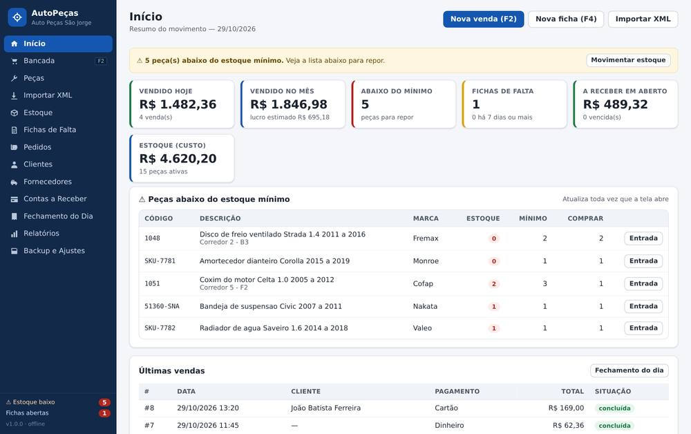
Tela Início — resumo do dia, alertas e atalhos.
O que cada parte mostra
| Parte da tela | Para que serve |
|---|
| Faixa amarela de aviso |
Avisa quando existe peça abaixo do estoque mínimo ou conta a receber vencida.
O botão leva direto para a tela de resolver. |
| Vendido hoje | Quanto entrou de vendas hoje e quantas vendas foram feitas. |
| Vendido no mês | Total do mês e o lucro estimado (venda menos custo das peças). |
| Abaixo do mínimo | Quantidade de peças que precisam ser repostas. |
| Fichas de falta | Pedidos de clientes aguardando peça (e quantos estão parados há 7 dias ou mais). |
| A receber em aberto | Vendas faturadas que ainda não foram pagas, e quantas estão vencidas. |
| Estoque (custo) | Quanto de dinheiro está parado no estoque, pelo preço de custo. |
| Peças abaixo do estoque mínimo | Lista das peças que precisam ser compradas, com a quantidade sugerida de compra. |
| Últimas vendas | As últimas vendas feitas. Clique em uma linha para ver os detalhes ou cancelar. |
Botões do topo
- Nova venda (F2) — abre a bancada para vender.
- Nova ficha (F4) — abre o cadastro de ficha de falta.
- Importar XML — abre o leitor de arquivo do fornecedor.
Dica: os números que aparecem no rodapé do menu (à esquerda, em vermelho) são avisos
rápidos: estoque baixo, fichas abertas e contas vencidas. Eles aparecem em qualquer tela do sistema.
3. Atalhos de teclado que economizam tempo
Os atalhos funcionam em qualquer tela do sistema. Você não precisa decorar todos: comece pelo
F2 (vender) e pelo F9 (finalizar a venda).
| Tecla | O que faz |
|---|
| F2 | Abre a Bancada e já deixa o cursor no campo de busca de peça. |
| F3 | Abre o Cadastro de peças com o cursor na busca. |
| F4 | Abre uma nova ficha de falta. |
| F8 | Abre o Fechamento do dia. |
| F9 | Finaliza a venda que está na bancada. |
| / | Vai para a busca de peças (funciona quando você não está digitando). |
| Ctrl + B | Abre Backup e Ajustes. |
| Esc | Fecha a janela (janela de cadastro, confirmação, cupom). |
| ↑ ↓ | Na bancada, escolhe a peça na lista de resultados da busca. |
| Enter | Na bancada, adiciona a peça escolhida ao carrinho. |
Como vender usando só o teclado (o jeito mais rápido)
- F2 — vai para a bancada.
- Digite o código ou parte da descrição da peça (ex.: filtro gol).
- ↓ para escolher e Enter para jogar no carrinho.
- Digite o nome do cliente, a placa e o valor recebido.
- F9 — a venda é gravada, o estoque baixa e o cupom aparece na tela.
Dica: a busca entende acento ou sem acento
(“pastilha”, “PASTILHA”, “pastílha” encontram a mesma peça) e também procura pelo
código do fabricante e pelos códigos equivalentes.
4. Cadastro de peças
Menu Peças. Aqui ficam todas as peças da loja, com os códigos de cruzamento.
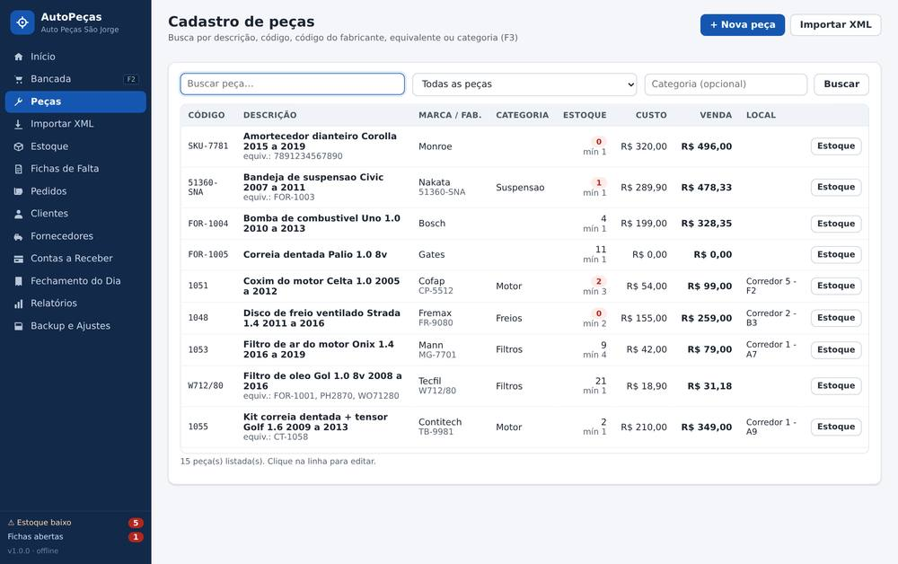
Tela Peças — lista com estoque, custo e preço de venda.
Como buscar (encontra em menos de 2 segundos)
Digite no campo “Buscar peça…” qualquer um destes dados:
- parte da descrição — filtro oleo
- o código da loja — 1042
- o código do fabricante — W712/80
- um código equivalente/OEM — PH2870
- a marca — tecfil
- a categoria — freios
- o local no depósito — corredor 2
A lista se atualiza enquanto você digita. O resultado mais “exato” aparece primeiro
(código igual, depois código do fabricante, depois equivalente).
Cadastrar uma peça nova
- Clique em + Nova peça.
- Preencha a Descrição (obrigatória). Ex.: Filtro de óleo Gol 1.0 8v.
- Informe o Código da loja (o seu número de balcão, ex.: 1042) e o
Código do fabricante.
- Preencha marca, categoria, local no depósito e fornecedor.
- Coloque o preço de custo e o preço de venda. Ao sair do campo de custo,
o sistema sugere automaticamente um preço de venda com 60% de margem (você pode mudar).
- Informe o estoque mínimo (quando o sistema deve avisar que está acabando)
e o estoque inicial.
- Adicione os códigos equivalentes/OEM: digite o código e aperte Enter
(ou clique em Adicionar). Pode colocar quantos quiser.
- Clique em Salvar peça.
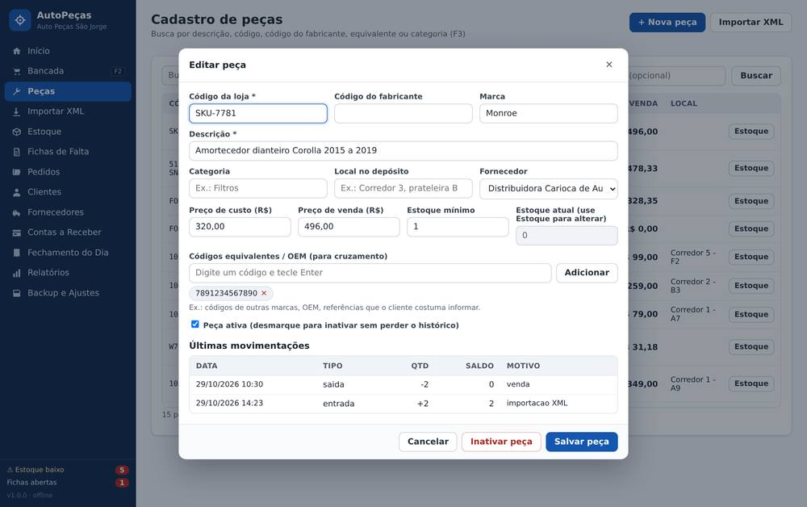
Ficha da peça — o mesmo formulário serve para editar e mostra as últimas movimentações.
Códigos equivalentes são o coração do cruzamento: se o cliente chega com
“PH2870” na mão, e essa peça está nos equivalentes do seu filtro,
a busca acha a peça certa mesmo que o número não seja o seu código.
Editar, inativar e ver histórico
- Clique em qualquer linha da lista para abrir a ficha e editar.
- Na ficha aparecem as últimas movimentações de estoque daquela peça.
- Inativar peça tira a peça das buscas, mas mantém o histórico de vendas.
Use quando parar de trabalhar com uma peça.
- O botão Estoque (na lista) abre a movimentação dessa peça.
Atenção: o estoque atual não é alterado pela ficha de cadastro. Para mudar o saldo,
use a tela Estoque (entrada, saída, ajuste ou baixa). Assim fica registrado o motivo
de cada mudança.
5. Importar XML do fornecedor
Menu Importar XML. Serve para dar entrada nas peças do fornecedor
usando o arquivo XML de catálogo, cotação ou nota fiscal — sem digitar nada.
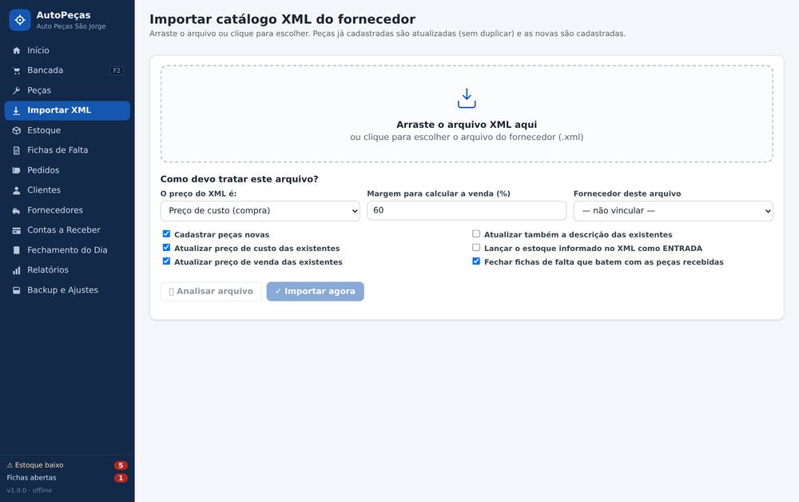
Passo a passo
- No campo “Arraste o arquivo XML aqui”, arraste o arquivo com o mouse
ou clique nele e escolha o arquivo no computador.
- Confira as opções (elas já vêm prontas para o uso normal):
- O preço do XML é: preço de custo ou preço de venda.
Na dúvida, deixe “preço de custo”.
- Margem para calcular a venda (%): 60% por padrão. O sistema calcula
venda = custo + 60%.
- Fornecedor deste arquivo: liga as peças ao fornecedor.
- Cadastrar peças novas — marcado.
- Atualizar preço de custo / venda — marcado (atualiza o que já existe).
- Lançar o estoque informado no XML como ENTRADA — marque esta opção
quando o arquivo for de mercadoria que chegou.
- Fechar fichas de falta que batem — marcado (veja o item 8).
- Clique em Analisar arquivo para ver uma prévia (nada é gravado ainda).
- Se estiver tudo certo, clique em Importar agora.
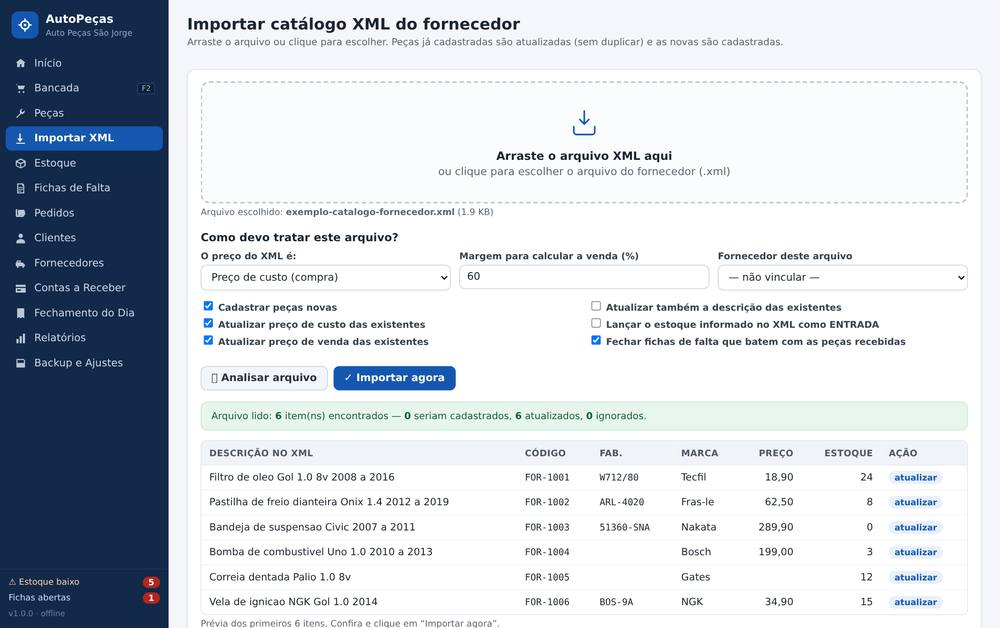
Prévia: mostra quantas peças seriam cadastradas e quantas seriam atualizadas, e como o sistema leu cada item.
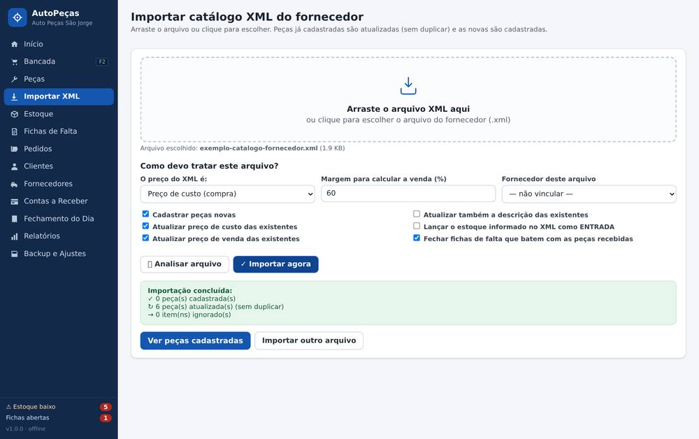
Resultado: quantas foram cadastradas, atualizadas e ignoradas — e o motivo de cada ignorada.
Como o sistema evita peça duplicada
Antes de cadastrar, o programa procura a peça em três lugares, nesta ordem:
- pelo código do fabricante (ex.: W712/80);
- pelo código/EAN que veio no arquivo;
- pelos códigos equivalentes já cadastrados na sua ficha da peça.
Se achou, ela é atualizada (preço, custo, marca) e nunca duplicada.
Se não achou, ela é cadastrada.
Testado: importando o mesmo arquivo duas vezes seguidas, o resultado é
“0 cadastradas, 6 atualizadas” — nenhuma peça repetida.
Itens ignorados: aparecem na lista com o motivo (por exemplo, “Código repetido
dentro do próprio arquivo XML” ou “Item sem descrição no XML”). Normalmente são linhas
de frete, observação ou peça que veio em branco no arquivo.
O sistema aceita o formato do seu fornecedor. Ele reconhece os nomes de campos mais usados
do mercado (descricao/desc/xProd, codigoFabricante/referencia, marca, preco/valor, estoque/qtd,
equivalentes/OEM) e também notas fiscais eletrônicas.
Se o seu fornecedor usar nomes diferentes, é só mandar um XML real de exemplo que o leitor é ajustado.
6. Estoque
Menu Estoque. Toda mudança de saldo passa por aqui e fica registrada com data e motivo.
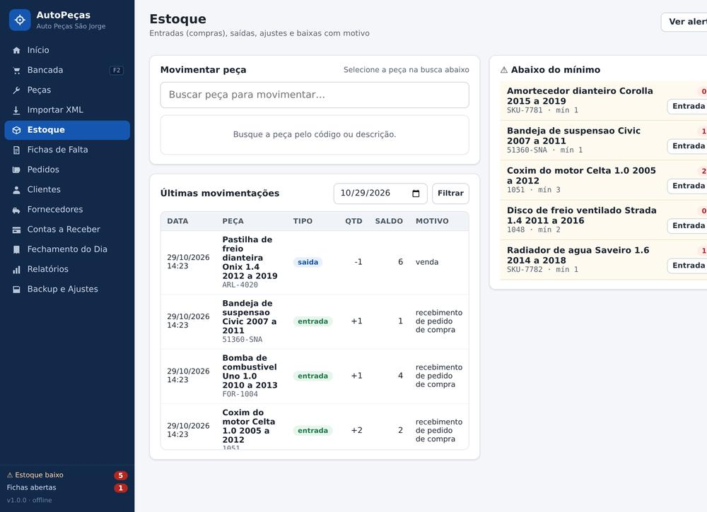
Movimentar uma peça
- Busque a peça no campo do topo e clique nela.
- Escolha o tipo de movimento:
- Entrada (compra/recebimento) — chegou mercadoria. Soma no estoque.
- Saída (venda/uso) — saiu peça por outro motivo que não seja a bancada.
- Ajuste (corrigir saldo) — você digita o saldo correto depois de contar a prateleira.
- Baixa (perda, avaria, garantia) — peça estragada, perdida ou trocada na garantia.
- Informe a quantidade (ou o novo saldo, no caso de ajuste) e o motivo
— o motivo é obrigatório em ajuste e baixa.
- Clique em Confirmar movimento.
Alerta de estoque mínimo
A coluna da direita mostra todas as peças abaixo do mínimo, sempre atualizada.
A mesma lista aparece na tela Início. O botão Entrada abre a movimentação da peça.
Histórico
Abaixo ficam as últimas 200 movimentações, com data, tipo, quantidade, saldo depois do movimento
e o motivo. Use o filtro de data para ver um dia específico.
Vender sem estoque: por padrão o sistema permite vender peça com saldo zero
(o saldo fica negativo e aparece em vermelho). Se você não quiser isso, desmarque a opção em
Backup e Ajustes → Permitir vender peça sem estoque.
7. Bancada — venda rápida
Menu Bancada (ou F2). É a tela que você vai usar o dia inteiro.
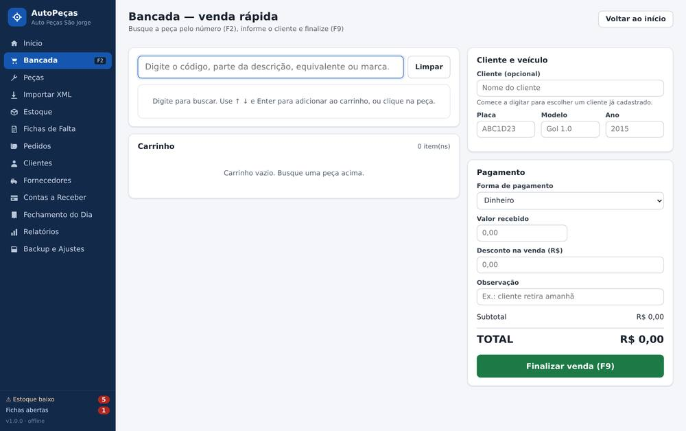
Bancada: busca de peça à esquerda, cliente e pagamento à direita.
Passo a passo da venda
- Busque a peça no campo grande. Digite o código, parte da descrição,
o código do fabricante ou um equivalente. A lista aparece na hora.
- Clique na peça (ou use ↓ e Enter). Ela vai para o
Carrinho.
- No carrinho você pode mudar a quantidade, o preço e dar
desconto por item. Para tirar a peça, clique no ✕.
- Preencha o cliente (opcional — comece a digitar e escolha na lista),
a placa, o modelo e o ano do veículo.
- Escolha a forma de pagamento e digite o valor recebido.
O sistema calcula o troco sozinho (aparece em verde).
- Se precisar, coloque um desconto na venda e uma observação.
- Clique em Finalizar venda (F9).
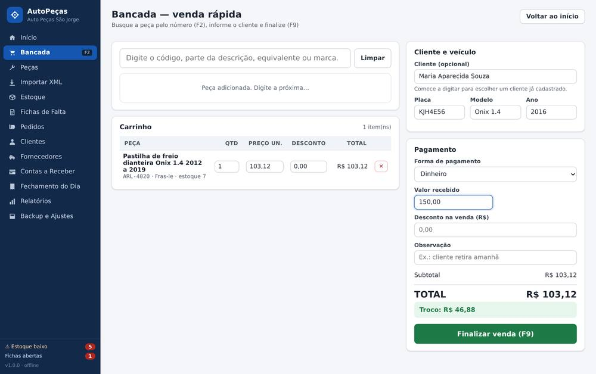
Carrinho preenchido: o troco é calculado automaticamente.
O que acontece ao finalizar
- A venda é gravada com número, data e hora.
- O estoque baixa automaticamente na quantidade vendida.
- Aparece a tela de confirmação com o cupom para imprimir (se quiser).
- Se o pagamento for Faturado, a venda vira uma
conta a receber com data de vencimento.
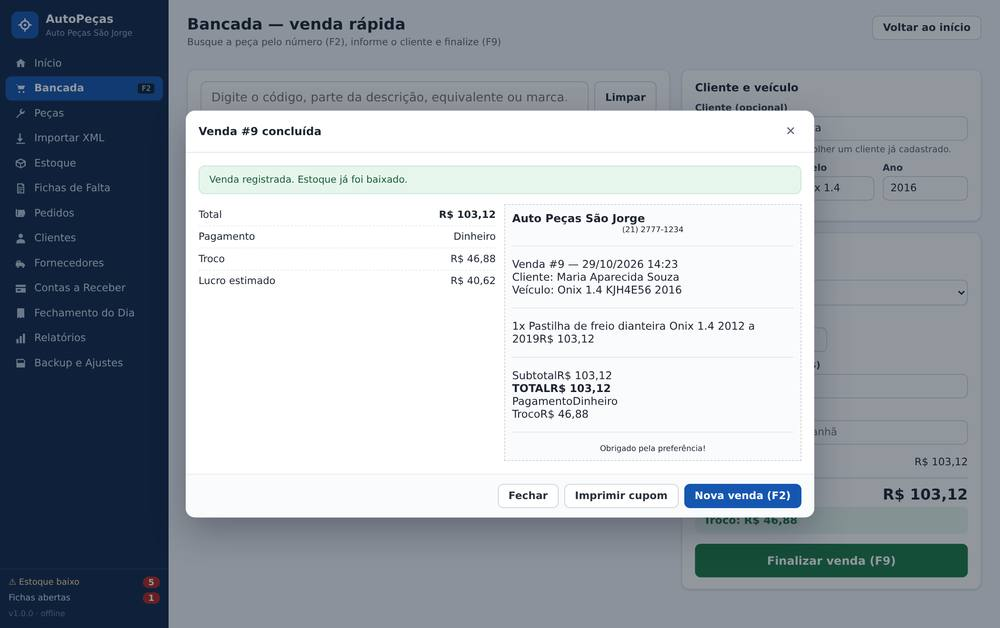
Confirmação da venda: total, pagamento, troco, lucro estimado e cupom.
Formas de pagamento
| Forma | Como o sistema trata |
|---|
| Dinheiro | Calcula troco pelo valor recebido. |
| PIX | Igual ao dinheiro (só não calcula troco a menos que você informe). |
| Cartão | Entra no fechamento como cartão. |
| Faturado (a prazo) | Vira conta a receber, com vencimento em dias (padrão 30). |
| Transferência | Entra no fechamento como transferência. |
Cancelar uma venda: na tela Início, clique na venda em “Últimas vendas”
e use Cancelar venda. O estoque das peças volta automaticamente.
8. Fichas de falta (o caderninho digital)
Menu Fichas de Falta (ou F4). Use quando o cliente pede uma peça
que não tem em estoque.
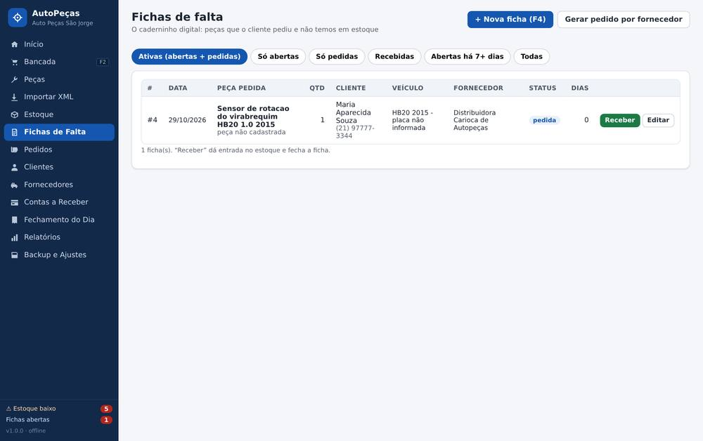
Lista das fichas, com cliente, veículo, dias em aberto e botões de ação.
Abrir uma ficha
- Clique em + Nova ficha (F4).
- No campo 1. Peça, busque a peça no cadastro e clique nela
(isso liga a ficha à peça, e depois permite dar entrada automática no estoque).
- Se a peça ainda não estiver cadastrada, não tem problema: deixe em branco e
escreva a descrição no campo Descrição da peça pedida.
- Informe a quantidade, o custo estimado e o fornecedor
que costuma trazer essa peça.
- Preencha o cliente (com telefone) e o veículo
(modelo, placa, ano).
- Clique em Salvar ficha.
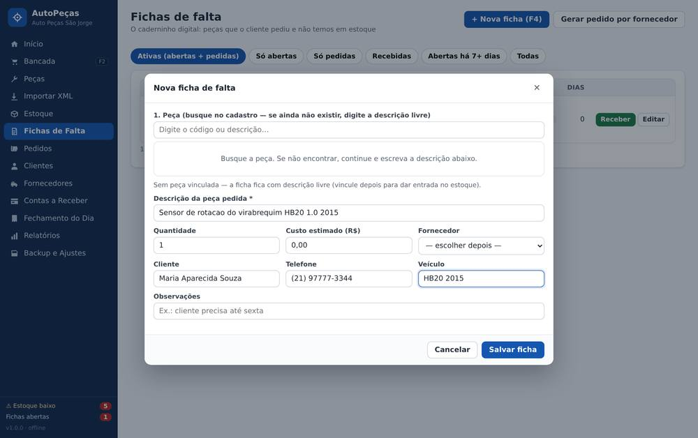
Nova ficha: o cliente, o telefone e o veículo ficam gravados para avisar quando a peça chegar.
Os status da ficha
| Status | Significado |
|---|
| Aberta | O cliente pediu e ainda não foi comprado. |
| Pedida | Já entrou em um pedido de compra do fornecedor. |
| Recebida | A peça chegou: a ficha fecha e a entrada no estoque é lançada. |
Quando a peça chega — 3 formas de fechar a ficha
- Pelo XML do fornecedor: importe o arquivo normalmente. As fichas que batem
com as peças do arquivo fecham sozinhas e o estoque entra.
- Pelo pedido de compra: abra o pedido em Pedidos e clique em
Receber pedido (veja o item 9).
- Na mão: clique em Receber na linha da ficha.
Se a ficha foi criada só com descrição, o sistema pede para você escolher a peça no cadastro
antes de dar entrada.
Abas de filtro
Ativas (abertas + pedidas) · Só abertas · Só pedidas · Recebidas ·
Abertas há 7+ dias · Todas.
Fichas paradas: a coluna Dias fica em vermelho a partir de 7 dias.
Use o botão Abertas há 7+ dias toda semana para cobrar o fornecedor e avisar o cliente.
9. Pedidos de compra
Menu Pedidos. O pedido é gerado a partir das fichas de falta,
agrupadas por fornecedor, com o custo estimado.
Gerar um pedido
- Abra Fichas de Falta e clique em Gerar pedido por fornecedor.
- O sistema mostra o que vai pedir, separado por fornecedor, com quantidade e subtotal.
- Clique em Gerar N pedido(s). As fichas passam para o status Pedida.
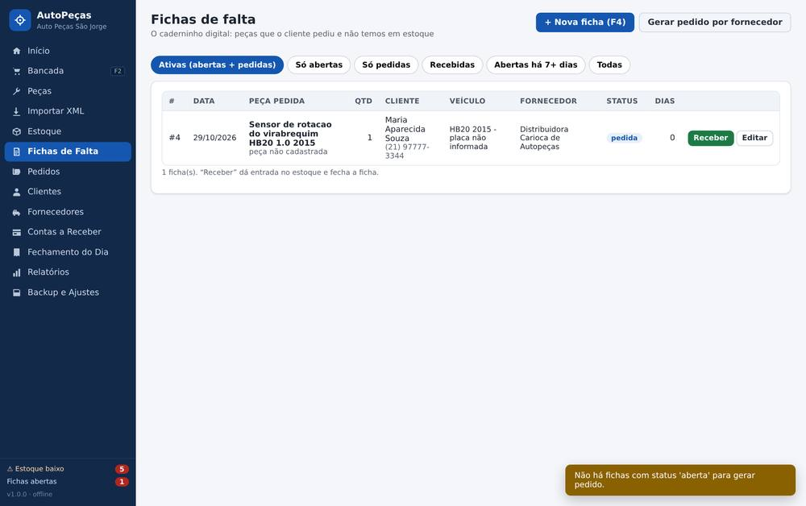
Antes de gerar, você confere tudo o que será pedido em cada fornecedor.
Acompanhar e receber
- Abra Pedidos e clique em Abrir no pedido desejado.
- Quando a mercadoria chegar, clique em Receber pedido (entra no estoque).
- Pronto: todas as peças entram no estoque, as fichas de falta fecham e o pedido fica como
recebido.
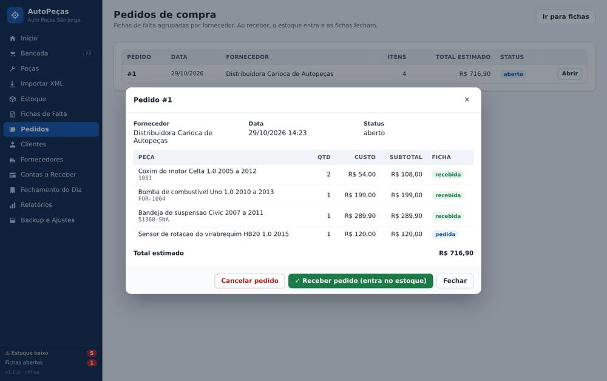
Detalhe do pedido: itens, custo estimado e status de cada ficha.
Pedido errado? Use Cancelar pedido. O pedido é cancelado e as fichas voltam
para o status aberta, sem mexer no estoque.
Testado: abrir ficha → gerar pedido → receber pedido fecha a ficha e soma a
quantidade no estoque da peça.
10. Clientes e veículos
Menu Clientes.
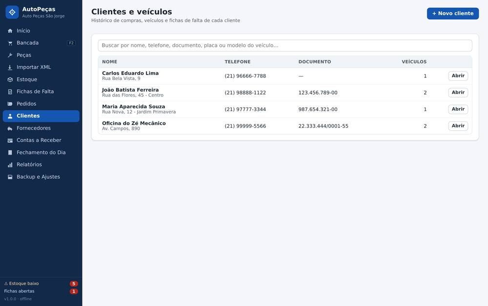
Cadastrar um cliente
- Clique em + Novo cliente.
- Preencha nome (obrigatório), telefone, CPF/CNPJ, endereço e observações.
- Clique em Salvar.
Veículos do cliente
Abra o cliente e, na seção Veículos, informe placa, modelo e ano e clique em
Adicionar. Pode cadastrar vários veículos por cliente.
Histórico do cliente
Ao abrir um cliente você vê, na mesma tela:
- Compras — todas as vendas feitas para ele (clique para ver os itens);
- Fichas de falta — o que ele pediu e ainda está em aberto;
- Veículos — os carros dele.
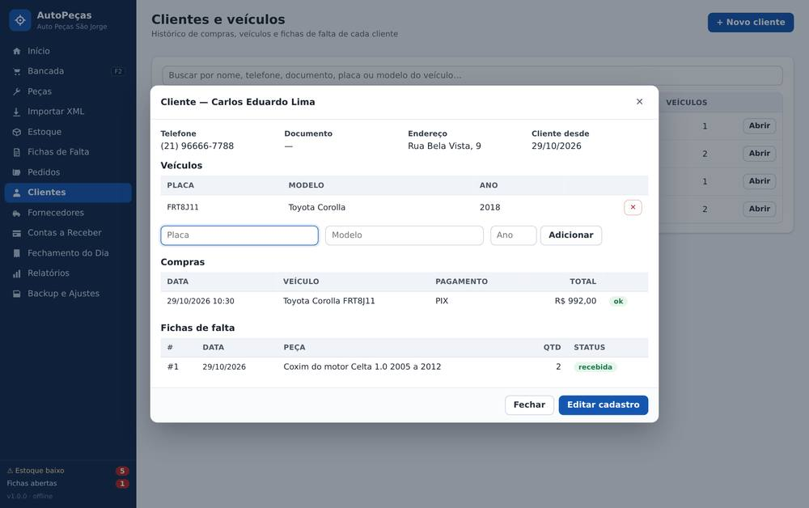
Ficha do cliente com veículos, compras e fichas de falta.
Busca de cliente aceita nome, telefone, CPF/CNPJ, placa ou modelo do veículo.
Muito útil quando o cliente chega e você só sabe a placa.
11. Fornecedores
Menu Fornecedores. Cada ficha de falta, pedido de compra e peça pode ser ligada a um fornecedor.
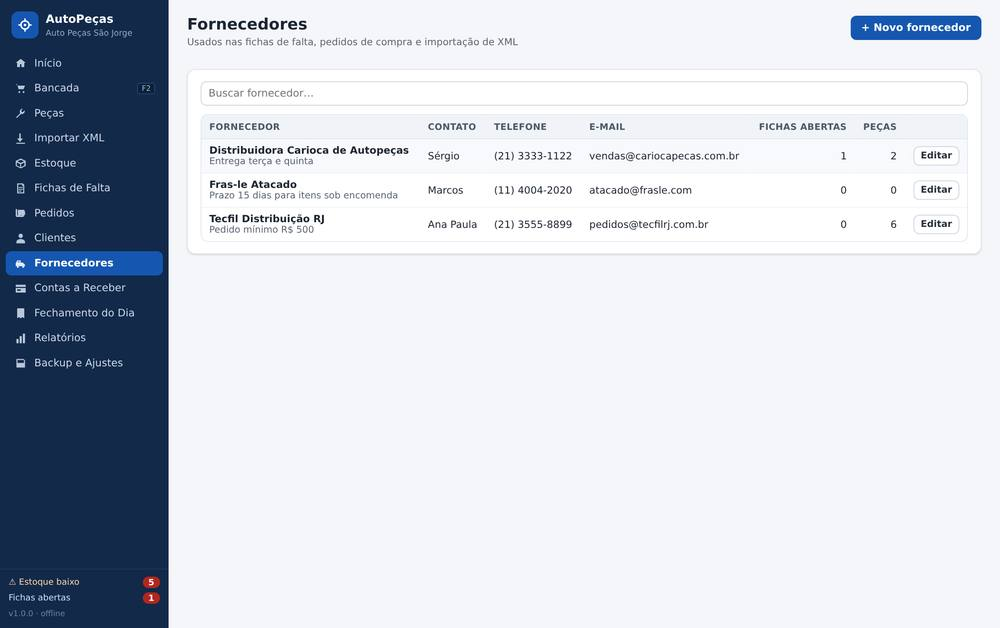
Cadastrar
- Clique em + Novo fornecedor.
- Preencha nome/razão social (obrigatório), pessoa de contato, telefone/WhatsApp, e-mail e
observações (ex.: “entrega terça e quinta”, “pedido mínimo R$ 500”).
- Clique em Salvar.
A lista mostra quantas fichas abertas e quantas peças estão ligadas
a cada fornecedor — assim você sabe com quem tem mais coisa pendente.
No dia a dia: ao importar um XML, escolha o fornecedor do arquivo.
Na ficha de falta, escolha o fornecedor que costuma trazer aquela peça.
Com isso, o Gerar pedido por fornecedor já separa tudo certinho.
12. Contas a receber
Menu Contas a Receber. Toda venda feita como Faturado entra aqui
automaticamente, com data de vencimento.
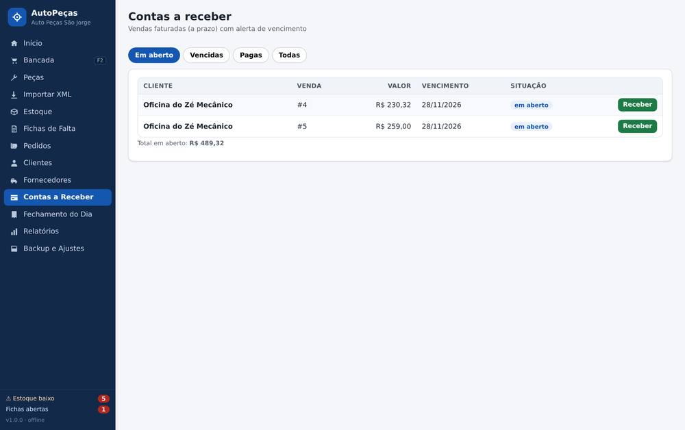
Como usar
- As abas mostram: Em aberto, Vencidas, Pagas e Todas.
- Contas vencidas aparecem em vermelho com o número de dias de atraso.
- Quando o cliente pagar, clique em Receber e confirme. A conta sai da lista de abertas.
- O total em aberto aparece embaixo da lista.
Alerta de vencimento: contas vencidas aparecem na faixa vermelha da tela Início e no
rodapé do menu (em qualquer tela). Também ficam no relatório
Contas a receber, com a coluna de atraso.
O prazo padrão do faturado (30 dias) pode ser mudado em
Backup e Ajustes → Prazo padrão de faturado.
13. Fechamento do dia
Menu Fechamento do Dia (ou F8). É o “caixa” do dia.
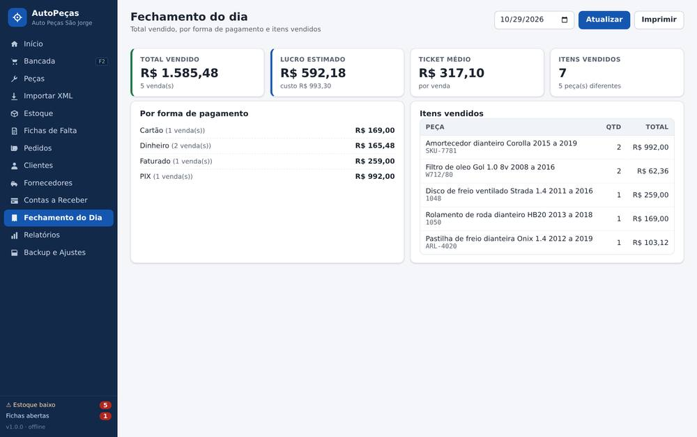
Fechamento: total vendido, lucro, ticket médio, formas de pagamento e itens vendidos.
O que aparece
- Total vendido no dia e número de vendas;
- Lucro estimado (total vendido menos o custo das peças vendidas);
- Ticket médio (média por venda);
- Itens vendidos (quantidade total e peças diferentes);
- Por forma de pagamento — dinheiro, PIX, cartão, transferência e faturado;
- Itens vendidos — lista de peças com quantidade e total.
Outros dias e impressão
- Mude a data no campo do topo para ver o fechamento de outro dia.
- Clique em Imprimir para tirar o fechamento no papel (ou salvar em PDF).
Testado: ao finalizar uma venda, o valor aparece no fechamento do dia e o estoque
da peça diminui na mesma hora.
14. Relatórios
Menu Relatórios. Escolha o relatório, o período e clique em Gerar.
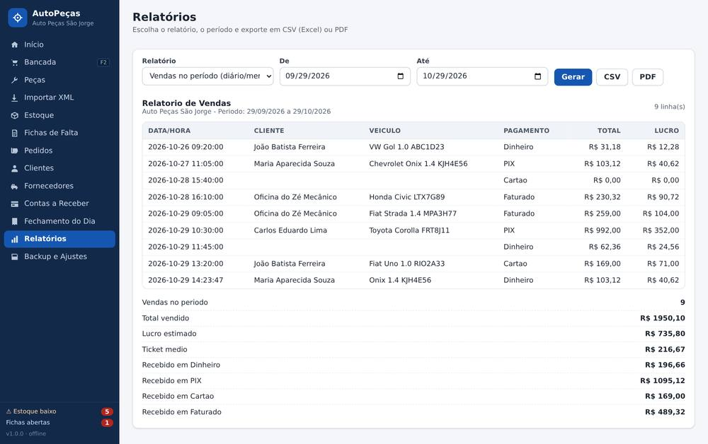
Relatórios disponíveis
| Relatório | Mostra |
|---|
| Vendas no período | Cada venda (data, cliente, veículo, pagamento, total e lucro) + totais por forma de pagamento. |
| Lucro estimado por dia | Por dia: quantidade de vendas, total vendido, custo e lucro. |
| Produtos mais vendidos | Ranking por quantidade, com total vendido e lucro. |
| Peças abaixo do estoque mínimo | Lista de compra, com quantidade sugerida e custo estimado da reposição. |
| Pedidos de compra abertos | Pedidos por fornecedor e total estimado. |
| Fichas de falta em aberto | Fichas pendentes, cliente, veículo, status e dias em aberto. |
| Contas a receber | Em aberto e vencidas, com dias de atraso. |
| Saldo do estoque em dinheiro | Peça por peça: quantidade, custo, total a custo, preço, total a venda e lucro potencial. |
| Clientes e histórico | Total comprado por cliente e data da última compra. |
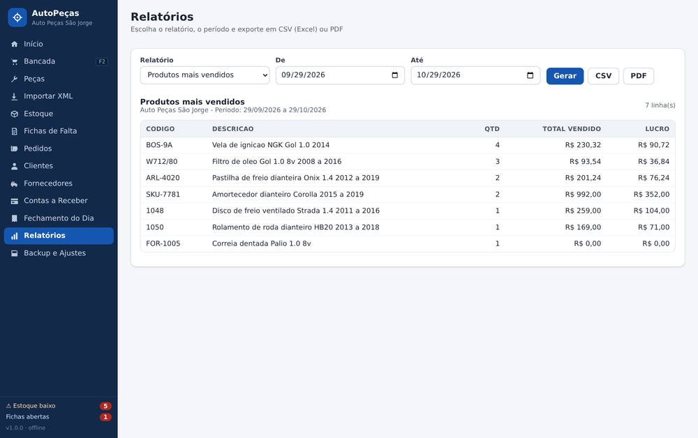
Relatório na tela, com o resumo embaixo da lista.
Exportar para Excel (CSV) ou PDF
- CSV — abre no Excel. Os números vão sem “R$” para facilitar as somas,
e os acentos vêm certos.
- PDF — pronto para imprimir ou enviar por WhatsApp. Já sai com o nome da sua loja,
o período e o resumo no final.
O arquivo exportado é salvo na pasta Downloads do computador, com o nome do
relatório e a data (ex.: vendas-2026-10-29.pdf).
15. Backup e ajustes
Menu Backup e Ajustes. É a parte mais importante para não perder dados.
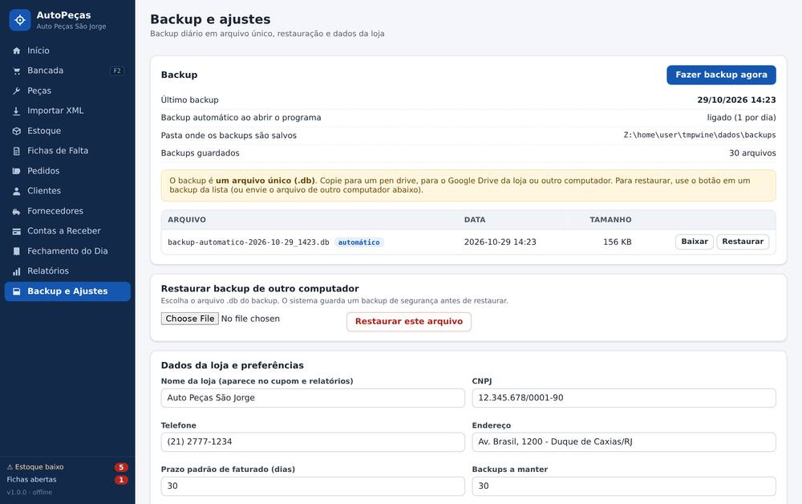
Fazer o backup do dia (1 clique)
- Clique em Fazer backup agora.
- O sistema cria um arquivo único (extensão .db) na pasta de backups e mostra o nome dele.
- Na lista aparecem todos os backups, com data e tamanho. Use Baixar para copiar o
arquivo para um pen drive, para o e-mail ou para o Google Drive da loja.
Backup automático: ao abrir o programa, ele já faz um backup por dia
sem você pedir (pode desligar essa opção nesta tela). A faixa amarela da tela Início avisa se o
backup do dia ainda não foi feito.
O sistema guarda os últimos 30 backups (você pode mudar esse número) e apaga os mais
antigos automaticamente, para não encher o computador.
Restaurar num computador limpo (o dia em que o computador quebra)
- Instale o AutoPeças no computador novo (o mesmo instalador).
- Abra o programa e vá em Backup e Ajustes.
- Em “Restaurar backup de outro computador”, escolha o arquivo .db do backup
(o que você salvou no pen drive ou no Drive).
- Clique em Restaurar este arquivo e confirme.
- Pronto: peças, vendas, clientes, fichas, contas e ajustes voltam exatamente como estavam.
Atenção: restaurar substitui os dados atuais pelos dados do arquivo.
Antes de restaurar, o sistema cria sozinho um backup de segurança
(“antes-de-restaurar”), então nada é perdido por engano.
Ajustes da loja
- Nome da loja — aparece no cupom e nos relatórios em PDF.
- CNPJ, telefone e endereço — dados da loja.
- Prazo padrão de faturado (dias) — usado quando a venda é a prazo.
- Backups a manter — quantos arquivos de backup ficam guardados.
- Segunda pasta de backup — opcional. Coloque aqui o caminho de um pen drive ou
da pasta do Google Drive da loja. Depois de cada backup, o sistema copia o mesmo arquivo para lá.
Se a pasta não existir (pen drive desconectado, por exemplo), o backup principal continua
funcionando normalmente e aparece um aviso em vermelho na tela Backup e Ajustes.
- Backup automático e permitir vender sem estoque — liga/desliga.
- Encerrar o sistema — desliga o programa do jeito certo. Também existe o atalho
“Encerrar AutoPecas” no menu Iniciar, para fechar o sistema quando a janela do
navegador já foi fechada.
Onde ficam os dados
Os dados ficam gravados nesta pasta do computador:
C:\Users\seu-usuário\AppData\Roaming\AutoPecas
Dentro dela existe o arquivo autopecas.db (todos os seus dados) e a pasta
backups (as cópias de segurança). Você não precisa abrir essas pastas para usar o
sistema — o próprio programa cuida disso.
16. Dúvidas frequentes e solução de problemas
O navegador diz “não foi possível acessar este site”
A janela preta do programa foi fechada. Clique de novo no ícone AutoPeças da
Área de Trabalho. O sistema abre no navegador outra vez — os dados continuam salvos.
Fechei o navegador sem querer. Perdi alguma coisa?
Não. Basta abrir o programa de novo (ou digitar http://127.0.0.1:8787
no navegador). Tudo que foi salvo continua lá.
Posso usar em mais de um computador ao mesmo tempo?
O AutoPeças foi feito para um computador (o do balcão). Para usar em outro,
instale lá e restaure o backup mais recente. Depois, escolha um dos dois como principal — assim
não existe risco de dado desencontrado.
Preciso de internet?
Não. Nem para vender, nem para o XML, nem para relatórios. Só é preciso internet se você quiser
copiar o backup para o Google Drive ou mandar o PDF por WhatsApp.
O XML do meu fornecedor não é reconhecido
Use o botão Analisar arquivo primeiro: ele mostra o que o sistema conseguiu ler.
Se os campos vierem vazios, mande um arquivo real de exemplo para o responsável pelo sistema
ajustar o leitor — a leitura é flexível e aceita nomes de campos diferentes.
Uma peça ficou duplicada. O que faço?
Abra a peça duplicada e clique em Inativar peça. Ela sai das buscas e o histórico
é mantido. O leitor de XML não duplica quando o código do fabricante está igual —
se o fornecedor mandar o mesmo produto com código diferente, acrescente esse código aos
equivalentes da peça principal para que o sistema reconheça na próxima vez.
Emito nota fiscal?
Não. O AutoPeças controla peças, estoque e vendas. O cupom que ele imprime é um comprovante interno
da venda (não é documento fiscal).
Esqueci de dar entrada em uma compra e o estoque está errado
Use Estoque → Ajuste, informe o saldo correto que você contou na prateleira e
escreva o motivo (ex.: “inventário”). O ajuste fica registrado no histórico.
Posso apagar uma venda?
Só cancelar. Uma venda cancelada devolve as peças ao estoque, sai dos totais do dia e continua
registrada para consulta. Assim nenhum número desaparece do histórico.
Onde estão meus dados, exatamente?
Na pasta C:\Users\seu-usuário\AppData\Roaming\AutoPecas.
O arquivo autopecas.db é o seu banco de dados e a pasta backups guarda
as cópias. Nunca apague essa pasta sem antes copiar um backup.
Resumo do dia a dia (cola para deixar no balcão)
| Ação | Como |
|---|
| Abrir o programa | Clique no ícone AutoPeças (deixe a janela preta aberta) |
| Vender | F2 → buscar peça → cliente/placa → recebido → F9 |
| Cadastrar peça | Peças → + Nova peça |
| Entrada de mercadoria | Importar XML → arrastar arquivo → Importar agora |
| Cliente pediu peça que não temos | F4 → preencher → Salvar ficha |
| Comprar as faltas | Fichas de Falta → Gerar pedido por fornecedor |
| Peça chegou | Pedidos → Abrir → Receber pedido |
| Fechar o dia | F8 (Fechamento do dia) → Imprimir |
| Backup do dia | Backup e Ajustes → Fazer backup agora |
AutoPeças 1.0.0 — sistema local, sem internet e sem mensalidade.
Dúvidas: consulte este manual ou o responsável pela instalação.